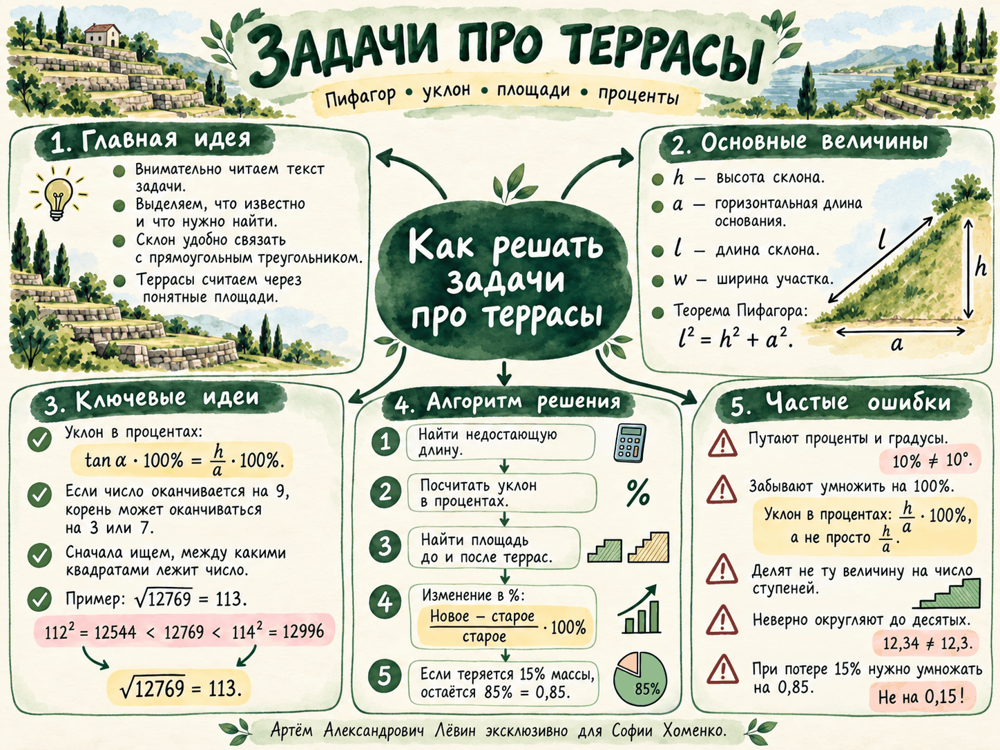

30 · 113 = 3390 м²06 октября 2026 · прикладные задачи ОГЭ
Задачи про террасы
Один сюжет связывает прямоугольный треугольник, уклон в процентах, площади и проценты. Главное — аккуратно перевести текст задачи на язык величин и не менять смысл исходных данных по дороге.
01 · модель
Сначала — четыре величины
Для склона удобно сразу обозначить перепад высот h, горизонтальную проекцию a, длину склона l и ширину участка w. Первые три величины образуют прямоугольный треугольник.
l² = h² + a², l = √(h² + a²)
Пример занятия
15² + 112² = 12769, √12769 = 113 м
Контроль. Перед вычислением подпишите, где вертикаль, где горизонтальная проекция и где сама длина склона.
02 · вычисление
Как распознать квадрат большого числа
Если нужного числа нет в таблице квадратов, сначала определите диапазон корня по квадратам круглых десятков, затем используйте последнюю цифру.
1
Найдите десяток корня.
Например, 70² = 4900 < 5184 < 6400 = 80².
Например, 70² = 4900 < 5184 < 6400 = 80².
2
Сузьте кандидатов по последней цифре.
Квадрат оканчивается на 4, значит единицы корня — 2 или 8: кандидаты 72 и 78.
Квадрат оканчивается на 4, значит единицы корня — 2 или 8: кандидаты 72 и 78.
3
Проверьте кандидата.
72² = 5184, поэтому √5184 = 72.
72² = 5184, поэтому √5184 = 72.
Важно. Последняя цифра даёт кандидатов. Финальная проверка возведением в квадрат обязательна.
03 · определение
Уклон в процентах — это не градусы
В условии уклон задан через тангенс. Поэтому процентное значение вычисляется по отношению вертикального катета к горизонтальному.
p = tg α · 100% = h / a · 100%
15 / 112 · 100% ≈ 13,392857% ≈ 13,4%
Частая ошибка. 50% в таком условии не означает угол 50°. Сравнивайте ограничение с процентным значением, полученным по формуле.
04 · площади
До и после террасирования
До устройства террас посевная поверхность идёт вдоль склона. После — складывается из горизонтальных ступеней.
30 · 112 = 3360 м²Если склон разбит на n равных ступеней, горизонтальная длина одной ступени равна a/n. Площадь одной ступени — w·a/n, а суммарная площадь:
n · w · a / n = w · a
Ключевой вывод. Число равных ступеней в итоговой формуле сокращается. Делится горизонтальная длина a, затем площадь одной ступени умножается на количество ступеней.
05 · проценты
На сколько процентов уменьшилась площадь
Процент уменьшения всегда считается от исходного значения — того, что было до изменения.
q = (Sдо − Sпосле) / Sдо · 100%
(3390 − 3360) / 3390 · 100% ≈ 0,885% ≈ 0,9%
Проверка знаменателя. При вопросе «на сколько процентов сократилось» в знаменателе должно стоять исходное значение.
06 · многошаговый расчёт
Урожай и потеря массы
Здесь важно не потерять порядок действий: площадь → масса сырого продукта → учёт потери → перевод граммов в килограммы.
- Найти массу сырого продукта: Mсыр = S · r.
- Если теряется 15%, остаётся 85% = 0,85.
- Умножить исходную массу на 0,85.
- Перевести граммы в килограммы делением на 1000.
3360 · 600 = 2 016 000 г
2 016 000 · 0,85 = 1 713 600 г = 1713,6 кг
Важно. Потеря 15% означает умножение на 0,85, поскольку именно 85% массы остаётся.
07 · маршрут
Алгоритм всей задачи
- Прочитать условие и выписать данные.
- Обозначить h, a, l, w; отдельно выписать число террас, урожайность и проценты, если они даны.
- Если нужна длина склона: l = √(h² + a²).
- Если нужен уклон: p = h/a · 100%.
- Площади: Sдо = wl, Sпосле = wa.
- Если спрашивают уменьшение: q = (Sдо − Sпосле)/Sдо · 100%.
- Если нужен урожай: площадь → граммы → учёт потери массы → килограммы.
- Округлить только до точности из условия и записать ответ.

08 · практика
10 задач для закрепления
Задания идут по нарастающей сложности. В задачах на проценты ответ округляется до десятых, если отдельно не сказано иное.
1–3 · корень, Пифагор, уклон
- Не пользуясь таблицей квадратов, найдите √5184. Укажите диапазон и две возможные последние цифры корня.
- Ширина участка 24 м, перепад высот 20 м, горизонтальная проекция 99 м. Найдите длину склона и площадь до террас.
- Перепад высот 18 м, горизонтальная проекция 80 м. Найдите уклон в процентах.
4–6 · ограничение, ступени, процент уменьшения
- Террасы разрешены при уклоне не более 20%. Для h = 14 м и a = 75 м определите уклон и проверьте ограничение.
- Участок шириной 24 м имеет горизонтальную проекцию 99 м и разделён на 9 равных террас. Найдите длину одной ступени, площадь одной ступени и суммарную площадь.
- Ширина 24 м, длина склона 101 м, горизонтальная проекция 99 м. На сколько процентов уменьшилась площадь?
7–10 · урожай и составные задачи
- После устройства террас площадь 2376 м². Урожайность 550 г/м², при шлифовке теряется 12%. Сколько килограммов белого риса получится?
- Ширина 28 м, h = 12 м, a = 35 м. Найдите длину склона, обе площади и процент уменьшения.
- h = 21 м, a = 72 м. Найдите длину склона, уклон и проверьте ограничение 30%.
- Ширина 28 м, a = 35 м, урожайность 640 г/м², потеря 15%. Сколько килограммов белого риса получится?
Проверить ответы
| № | Ответ |
|---|---|
| 1 | 72 |
| 2 | 101 м; 2424 м² |
| 3 | 22,5% |
| 4 | 18,7%; ограничение выполняется |
| 5 | 11 м; 264 м²; 2376 м² |
| 6 | 2,0% |
| 7 | 1150,0 кг |
| 8 | 37 м; 1036 м²; 980 м²; 5,4% |
| 9 | 75 м; 29,2%; разрешено |
| 10 | 533,1 кг |